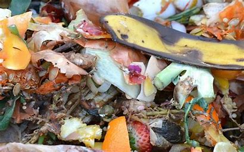
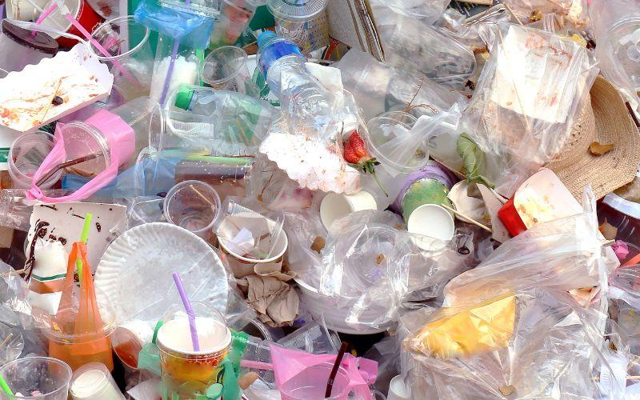
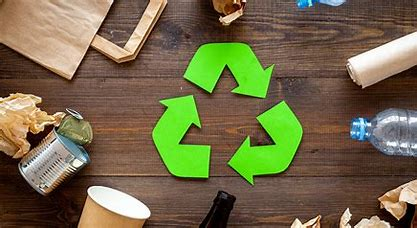

En general, provienen del sector industrial y sus efectos nocivos puedes abarcar desde el deterioro de la superficie terrestre hasta influir en la cadena alimenticia.

Los residuos orgánicos, también conocidos como desechos orgánicos, son aquellos residuos que provienen de algún ser vivo, como las plantas, los animales o los mismos seres humanos. De esta forma, se consideran residuos orgánicos las cascaras de fruta, las haces, las cascaras de huevo, las pieles de animales, las vísceras, la carne, los pedazos de pan, vegetales, aserrín, astillas de madera, corchos, palillos de dientes, palos de helado, flores, hojas, hierba, hojarasca, servilletas sucias, pañales usados, la sangre y papel de cocina con comida, entre otros.
Este tipo de residuos se suele clasificar en no peligrosos, como las heces y los alimentos; y peligrosos, como los residuos de procedimientos médicos.

Los residuos inorgánicos son los desechos no biológicos derivados de procesos antropogénicos (producidos por el ser humano). Por su naturaleza, son residuos no biodegradables o degradables a muy largo plazo. En esta categoría entran los desechos químicos, basura eléctrica y electrónica, desechos metálicos, plásticos, papel y cartón, vidrio, telas sintéticas o neumáticos, entre otros.




La historia del Reciclaje
La Regla de las tres R
Centros de Reciclaje en CDMX
Clasificación de Desechos:
Desechos organicos:
Este tipo de residuos se suele clasificar en no peligrosos, como las heces y los alimentos; y peligrosos, como los residuos de procedimientos médicos.
Desechos Inorganicos:
Los residuos inorgánicos pueden clasificarse según diversos criterios, entre ellos, su estado material, fuente de origen o su composición.
Por su estado material son sólidos, líquidos o gaseosos, y por su fuente de origen, son urbanos, industriales y mineros, entre otros.
En cuanto a su composición, los residuos inorgánicos pueden clasificarse en gran variedad de tipos.
Algunos de estos son los plásticos, papel y cartón, vidrios y desechos radiactivos.
Como son residuos contaminantes, deben tratarse adecuadamente y clasificarse entre los que se pueden reciclar o reutilizar y los que no.
¿Que es el reciclaje?
El reciclaje es el proceso que consiste en recolectar y transformar los residuos o materiales de desecho en nuevas materias o productos para su reutilización.
Este proceso consta de diferentes pasos como la recolección de materiales de desecho o basura, su clasificación (vidrio, plástico, aluminio, papel, madera, desechos biodegradables, etc.), su procesamiento y transformación en nuevas materias primas o productos que tendrán un nuevo ciclo de vida útil y, que posiblemente, se podrán volver a reciclar.
En el reciclaje participan las plantas de clasificación, donde son separados los residuos, y las plantas recicladoras, donde los residuos son trasformados para su aprovechamiento.
¿Que implica el reciclaje?
El Reciclaje Implica:
- Recolección: Se recopilan los materiales de desecho, como vidrio, plástico, aluminio, papel y madera.
- Separación y limpieza: Los desechos se envían a instalaciones especializadas, donde se separan y clasifican. Los materiales orgánicos e inorgánicos se limpian para obtener materiales reciclados más puros
- Transformación: Los materiales reciclables se procesan y transforman en nuevas materias primas o productos. Por ejemplo, las hojas de un cuaderno usado pueden reciclarse para hacer hojas nuevas.
Beneficios del Reciclaje:
- Preservación de recursos naturales: Al reciclar, prolongamos la vida útil de los materiales, reduciendo la necesidad de extraer más recursos de la naturaleza.
- Disminución de la contaminación: Al reciclar, evitamos que los desechos se acumulen en vertederos o se quemen, lo que reduce la contaminación del aire, agua y suelo.
- Ahorro de energía: La fabricación de productos reciclados consume menos energía que la producción a partir de materias primas vírgenes.
- Ahorro de petróleo: Al reciclar plásticos y otros materiales, disminuimos la dependencia de recursos fósiles como el petróleo.
- Ahorro de dinero: El reciclaje puede reducir los costos de gestión de residuos y la necesidad de crear nuevos materiales desde cero.
Proceso de Reciclaje de los "Desechos organicos"
-
Compostaje: Este proceso se basa en la descomposición natural de materia orgánica, como hojas secas, ramas, alimentos no procesados y excrementos de seres vivos. Puedes hacerlo en casa utilizando un compostador.
- Digestión anaeróbica: En este método, los residuos orgánicos se descomponen en ausencia de oxígeno. Se utiliza en plantas de tratamiento y genera biogás como subproducto
La Importancia del Reciclaje:
- Conservación de Recursos: El reciclaje no solo reduce la cantidad de desechos que terminan en vertederos y océanos, sino que también contribuye a la conservación de recursos naturales. Al transformar materiales reciclables en nuevos productos, minimizamos la necesidad de extraer más recursos de la Tierra
- Reducción de Contaminación: Al reciclar, evitamos que los desechos se acumulen en vertederos o se quemen, lo que reduce la contaminación del suelo, agua y aire. Además, al reciclar plásticos, disminuimos la liberación de sustancias tóxicas en el medio ambiente
- Ahorro Energético: La fabricación de productos reciclados consume menos energía que la producción a partir de materias primas vírgenes. El reciclaje contribuye a la lucha contra el cambio climático al reducir las emisiones de gases de efecto invernadero
Tratamiento de Reciduos
- Identificación y Separación: Los residuos peligrosos, como productos químicos, baterías y medicamentos vencidos, deben identificarse y separarse adecuadamente. Su manejo inadecuado puede tener consecuencias graves para la salud humana y el medio ambiente
- Reciclaje Específico: Algunos residuos tóxicos pueden reciclarse de manera segura. Por ejemplo, las baterías de plomo-ácido se reciclan para recuperar materiales valiosos como el plomo y el ácido sulfúrico.
- Tratamiento Especializado: Los residuos peligrosos requieren métodos de tratamiento específicos, como la incineración controlada o la neutralización química.
Conclusión
Cada acción, por pequeña que sea, contribuye significativamente a la gestión sostenible de residuos. Es nuestra responsabilidad adoptar hábitos que promuevan la conservación del medio ambiente para las presentes y futuras generaciones. Reciclar, tratar adecuadamente los residuos tóxicos y reducir nuestra huella ecológica son pasos esenciales hacia un mundo más limpio y saludable.